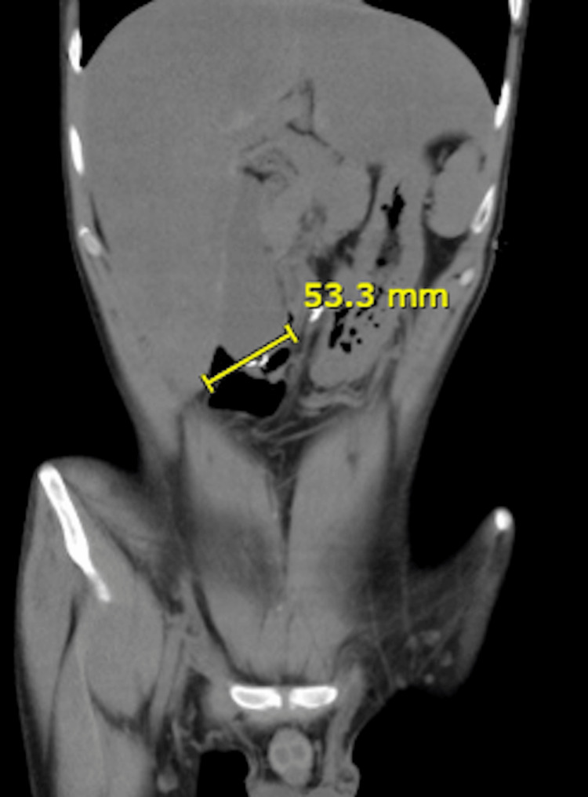
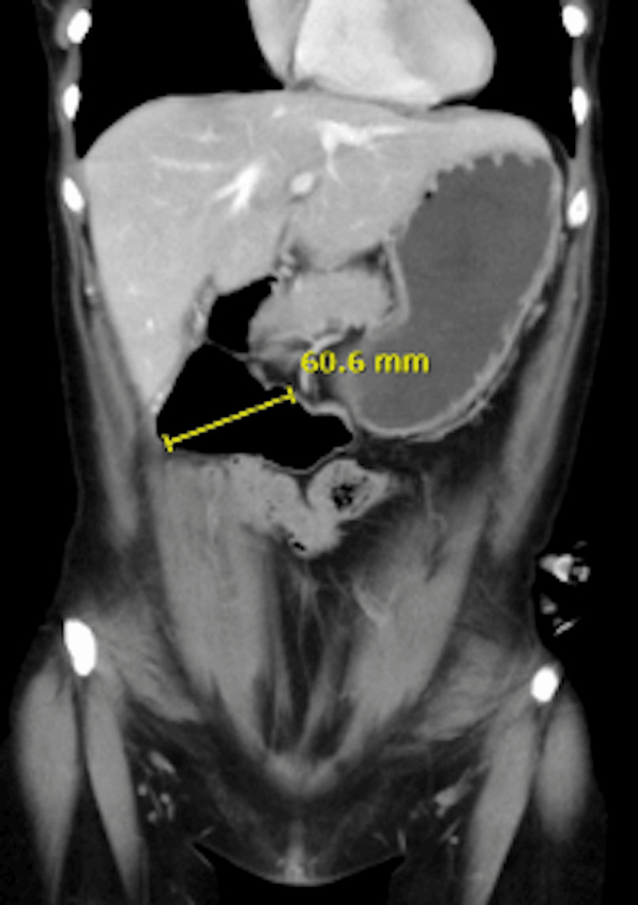
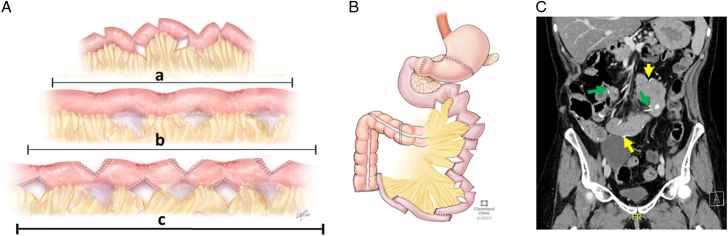

1762 — Hội chứng ruột ngắn ở người lớn: đoạn ruột còn lại, teduglutide, STEP và chỉ định ghép
Tags: pattern:ruot-ngan pattern:gian-ta-trang pattern:mat-doan-ruot vung:ruot-non vung:ta-trang vung:dai-trang vung:bung anatomy:ruot-non protocol:CT-bung-can-quang protocol:MR-enterography protocol:do-dai-ruot score:citrulline score:STEP
Mức chắc chắn (certainty): tổng hợp y văn (literature synthesis) — ghép loạt 64 bệnh nhân / 81 lần STEP ở người lớn (Ann Surg 2026, PMCID PMC13258089), 3 ca ultra-short bowel được STEP tá tràng (Cureus 2025, PMCID PMC12119115), tổng quan dinh dưỡng SBS–IF người lớn (Nutrients 2026, PMCID PMC13666838) và meta-analysis 17 nghiên cứu về teduglutide (2025, PMCID PMC12505948). Không có ca do nhóm tự chụp.
Câu hỏi thực hành: nam 27 tuổi, hoại tử ruột non diện rộng sau huyết khối mạc treo, còn tá tràng + đại tràng xuống, đang nuôi ăn tĩnh mạch toàn phần (total parenteral nutrition, TPN) tại nhà 6 tháng. CT bụng thấy tá tràng giãn 53,3 mm, không còn quai hỗng tràng. Bệnh nhân hỏi: "Tôi có bỏ được dịch truyền không? Có mổ kéo dài ruột được không? Khi nào phải ghép ruột?" Bài chốt năm quyết định: (1) ruột ngắn (short bowel syndrome, SBS) ở người lớn = đoạn ruột non còn lại < 200 cm; (2) kiểu giải phẫu quyết định tiên lượng — còn đại tràng thì cứu được ~1.000 kcal/ngày; (3) tá tràng giãn ≥ 3,5 cm là tiền đề để kéo dài ruột bằng STEP, nhưng giãn do tắc thì không; (4) citrulline < 20 µmol/L dự báo phụ thuộc TPN lâu dài; (5) ghép ruột chỉ đặt ra khi TPN gây biến chứng đe dọa tính mạng, không phải khi "chán truyền".
1. Tổng quan bệnh học – cơ chế hình ảnh: vì sao mất ruột lại thay đổi cả hình ảnh lẫn sinh lý
- Định nghĩa và dịch tễ: SBS ở người lớn là chiều dài ruột non còn lại < 200 cm sau cắt đoạn rộng (Nutrients 2026, PMC13666838); đây là cơ chế thường gặp nhất của suy ruột mạn (chronic intestinal failure, CIF), chiếm ~2/3 số ca CIF người lớn. Nguyên nhân hàng đầu: bệnh Crohn, thiếu máu mạc treo, viêm ruột do xạ, biến chứng mổ, xoắn ruột.
- Ba kiểu giải phẫu — ba bệnh cảnh khác nhau (cùng một chẩn đoán "SBS" nhưng xử trí và hình ảnh khác):
- Hỗng tràng tận – hậu môn nhân tạo (end jejunostomy): không còn đại tràng nối tiếp. Niêm mạc hỗng tràng thấm nước và natri tự do, nên truyền dịch nhược trương hoặc ưu trương đều kéo nước vào lòng ruột → bệnh nhân "tiết ròng" (net secretor), dịch hậu môn nhân tạo có thể nhiều hơn lượng ăn vào.
- Hỗng–đại tràng (jejunocolic): đại tràng trở thành cơ quan tiêu hóa: lên men carbohydrate không hấp thu thành axit béo chuỗi ngắn (short-chain fatty acids, SCFA), cứu được tới ~1.000 kcal/ngày; đồng thời "phanh hồi–đại tràng" (ileo-colonic brake qua peptide-YY/GLP-2) làm chậm nhu động. Cái giá: sỏi calci oxalat và nhiễm toan lactic D.
- Hỗng–hồi–đại tràng (jejunoileocolic): giữ > ~10 cm hồi tràng tận + đại tràng → còn phanh hồi tràng, tái hấp thu muối mật và vitamin B₁₂; đây là nhóm tiên lượng tốt nhất, hiếm khi cần hỗ trợ tĩnh mạch dài hạn.
- Thích nghi (adaptation) theo ba pha — mốc thời gian quyết định kỳ vọng:
- Pha cấp/tăng tiết (3–4 tuần đầu): mất dịch–điện giải ồ ạt, tăng tiết acid dạ dày; TPN là biện pháp cứu mạng.
- Pha thích nghi (vài tuần đến 1–2 năm): nhung mao cao hơn, hốc tuyến sâu hơn, nhu động chậm lại; đây là "cửa sổ vàng" để nuôi ăn sớm và tập ăn.
- Pha ổn định (> 1–2 năm): đạt trạng thái hấp thu mới; lúc này mới phân biệt được "suy ruột được bù trừ" (ăn nhiều, không cần truyền) với CIF thật sự.
- TẠI SAO bệnh nhân lại ăn nhiều: SBS gây tăng cân nặng ăn (adaptive hyperphagia) 1,5–2 lần nhu cầu năng lượng nghỉ; hấp thu ròng tương quan với tổng lượng ăn vào mạnh hơn là với "tỷ lệ hấp thu". Vì vậy hạn chế ăn là sai lầm kinh điển.
- TẠI SAO CT thấy tá tràng giãn và "mất" ruột non: sau cắt, đoạn ruột còn lại chịu toàn bộ lưu lượng và giãn bù trừ; trên CT có cản quang đường uống, dịch–khí làm lòng ruột căng, thành ruột mỏng, các quai còn lại không thấy ở phần bụng dưới. Đo đường kính tá tràng trên lát cắt ngang vuông góc với trục ruột hoặc MPR coronal; đo chiều dài ruột bằng cách lần theo lòng ruột từ góc Treitz đến hậu môn nhân tạo/miệng nối trên chuỗi lát mỏng.
- Vì sao tá tràng giãn lại là dấu hiệu "tốt" cho phẫu thuật: ruột giãn mới có đủ "chất liệu" để tạo các nhánh ngang nối tiếp (STEP). Trong loạt 64 ca STEP người lớn, đoạn ruột giãn ≥ 3,5 cm là tiền đề kỹ thuật của phần lớn ca mổ nguyên phát (PMC13258089).
- Vì sao citrulline là mốc sinh học: citrulline do tế bào ruột tổng hợp, không có trong thức ăn; < ~20 µmol/L tương quan với suy ruột vĩnh viễn và xác suất thấp đạt độc lập với truyền (PMC13666838). Trong loạt STEP, citrulline nền 22 ± 12 µmol/L (PMC13258089).
- Tiên lượng thực tế: khoảng một nửa người lớn SBS đạt độc lập nuôi ăn (enteral autonomy) và đa số trong 2 năm đầu; trong đoàn hệ 472 bệnh nhân bắt đầu TPN tại nhà vì CIF lành tính, 36,5% cai được hỗ trợ tĩnh mạch trong 5 năm, 4/5 trong số đó cai ngay năm đầu (PMC13666838).
- TẠI SAO phải theo dõi gan và xương: TPN dài hạn gây bệnh gan liên quan suy ruột (IFALD); trong đoàn hệ 90 người lớn, ứ mật mạn 65% và bệnh gan có biến chứng 41,5%, liên quan lượng lipid ≥ 1 g/kg/ngày; đồng thời gây loãng xương và huyết khối tĩnh mạch trung tâm.
2. Mẫu hình + chẩn đoán phân biệt theo hình thái (Gamut)
- Nhóm 1 — "chỉ còn tá tràng": CT coronal thấy tá tràng giãn 5–6 cm rồi tận cùng bằng miệng nối xuống đại tràng hoặc hậu môn nhân tạo; không thấy quai hỗng tràng. Ví dụ trong bài: 53,3 mm (Hình 1) và 60,6 mm (Hình 2) trên hai bệnh nhân ultra-short bowel (PMC12119115).
- Nhóm 2 — "hỗng tràng ngắn + đại tràng": vài quai hỗng tràng giãn nhẹ, đại tràng chứa nhiều hơi–phân; hay gặp sỏi thận oxalat và sỏi mật (mất muối mật → giảm hòa tan cholesterol).
- Nhóm 3 — "còn hồi tràng tận": đại tràng + hồi tràng > 10 cm; hình ảnh gần bình thường, chẩn đoán dựa vào tiền sử cắt ruột + chiều dài đo được, không dựa vào "hình thái lạ".
- Nhóm 4 — "sau STEP": ruột non dài ra nhưng gấp khúc hình răng cưa, có các đường kẹp ngang (staple line); cần phân biệt giãn bù trừ bình thường với hẹp/lei/rò tại đường kẹp.
- Nhóm 5 — biến chứng trên nền SBS (mẫu hình "đừng bỏ sót"):
- Bệnh gan do TPN (IFALD): gan giảm đậm độ lan tỏa, có thể gan nhiễm mỡ hoặc ứ mật; đánh giá trên CT không cản quang.
- Huyết khối tĩnh mạch trung tâm: tĩnh mạch cảnh trong/dưới đòn không ngấm thuốc, có huyết khối trong lòng, tuần hoàn bàng hệ thành ngực.
- Sỏi mật – sỏi thận: thường không triệu chứng, phát hiện tình cờ.
- Nhiễm khuẩn huyết liên quan catheter (CRBSI): ổ nhiễm không thấy trên hình ảnh; sốt là dấu hiệu duy nhất.
- Chẩn đoán phân biệt của "tá tràng giãn":
- Hội chứng động mạch mạc treo tràng trên (SMA syndrome): giãn đến D3, có mức chặn (transition point) tại chỗ ĐM mạc treo trên bắt ngang; bệnh nhân gầy sút nhưng còn đủ ruột non.
- Giả tắc ruột mạn (chronic intestinal pseudo-obstruction): giãn nhiều đoạn, không có điểm chuyển tiếp, nhu động kém; khác SBS ở chỗ không mất đoạn ruột.
- Hẹp/dính thực thể: có điểm chuyển tiếp rõ, quai trên giãn, quai dưới xẹp.
- Vòng thắt tá tràng, web tá tràng, tụy vòng: bẩm sinh, thường phát hiện ở trẻ.
- Chẩn đoán phân biệt của "tiêu chảy mạn + sụt cân" khi chưa rõ tiền sử cắt ruột: viêm ruột do xạ, Crohn, bệnh celiac, tiêu chảy muối mật, suy tụy ngoại tiết, SIBO, cường giáp, bệnh mô liên kết — mỗi nguyên nhân có hình ảnh và xét nghiệm khác.
- Ba nhóm "đừng bỏ sót" vì đổi hoàn toàn xử trí: tắc thực thể (mổ), IFALD nặng (đánh giá ghép), và huyết khối tĩnh mạch trung tâm (mất đường truyền → nguy cơ tử vong).
3. Bảng so sánh phân biệt (ma trận đối chiếu)
| Thực thể (entity) | Hình ảnh điển hình (CT/MR) | Chốt vào (rule-in) | Chốt loại (rule-out) | Gợi ý xác nhận |
|---|---|---|---|---|
| SBS thể chỉ còn tá tràng (ultra-short) | Tá tràng giãn 53,3–60,6 mm, không thấy quai hỗng tràng, miệng nối xuống đại tràng | Tiền sử cắt ruột + đoạn ruột còn lại < 200 cm + tá tràng giãn bù trừ | Còn > 200 cm hoặc giãn do điểm chặn thực thể → không phải SBS đơn thuần | Đo chiều dài trên MPR coronal, đối chiếu biên bản mổ |
| SBS thể hỗng–đại tràng | Vài quai hỗng tràng giãn nhẹ; đại tràng đầy hơi; sỏi thận/mật | Còn đại tràng nối tiếp + chiều dài ngắn | Mất toàn bộ đại tràng → thể end-jejunostomy | CT bụng, siêu âm thận, xét nghiệm oxalate niệu |
| SBS thể hỗng–hồi–đại tràng | Gần bình thường; hồi tràng tận > 10 cm | Còn > 10 cm hồi tràng tận + đại tràng | Không còn hồi tràng → mất phanh hồi tràng, tiên lượng kém hơn | Đo chiều dài + B₁₂, muối mật |
| SMA syndrome (giãn tá tràng) | Giãn D1–D3, điểm chặn tại ĐM mạc treo trên, khoảng chủ–mạc treo hẹp | Điểm chuyển tiếp tại ĐM mạc treo trên + sụt cân | Không có điểm chặn, giãn lan tỏa → nghĩ giả tắc | CT có cản quang, chụp lưu thông |
| Giả tắc ruột mạn | Giãn nhiều đoạn, thành mỏng, không điểm chặn, ứ dịch–khí | Giãn lan tỏa không giải thích được + nhu động kém | Có điểm chặn rõ → tắc cơ học | Manometry, đối chiếu lâm sàng |
| Hẹp/dính sau mổ | Điểm chuyển tiếp rõ, quai trên giãn, quai dưới xẹp | Điểm chuyển tiếp + triệu chứng tắc từng đợt | Giãn đều không điểm chặn → giả tắc/SBS bù trừ | CT cản quang, chụp lưu thông |
| Sau STEP có biến chứng | Đường kẹp ngang, rò/kén khí quanh miệng nối, hẹp tại đường kẹp | Khí ngoài lòng + dịch quanh đường kẹp sau mổ | Chỉ thấy đường kẹp đều, không dịch/khí bất thường → hậu phẫu bình thường | CT có cản quang, theo dõi sát |
| IFALD | Gan giảm đậm độ (nhiễm mỡ) hoặc ứ mật, lách to, cổ trướng | Bilirubin tăng + hình ảnh gan nhiễm mỡ/ứ mật trên TPN kéo dài | Gan bình thường trên CT không loại trừ IFALD sớm | Xét nghiệm gan, elastography, sinh thiết khi cần |
| Huyết khối tĩnh mạch trung tâm | Tĩnh mạch không ngấm thuốc, huyết khối trong lòng, tuần hoàn bàng hệ | Mất tín hiệu/không đổ đầy một đoạn tĩnh mạch trung tâm | Tĩnh mạch đổ đầy đều → không huyết khối | CTV/MRV, siêu âm Doppler |
4. Protocol chụp + hệ phân loại/điểm chuẩn hóa
4.1 CT bụng–chậu có cản quang đường uống (CT enterography)
- Chuẩn bị: nhịn ăn 4–6 giờ; uống dung dịch trung tính (polyethylene glycol hoặc nước) 1,5–2 L chia nhiều lần trong 45–60 phút để làm căng lòng ruột; không dùng cản quang baryt nếu đang xét tắc.
- Kỹ thuật: lát mỏng 1–2 mm, tái tạo MPR coronal/sagittal; tiêm cản quang tĩnh mạch, chụp thì tĩnh mạch cửa (70–80 giây); thêm thì không cản quang nếu cần đánh giá gan nhiễm mỡ.
- Đo chiều dài: lần theo lòng ruột từ góc Treitz đến hậu môn nhân tạo/miệng nối, cộng các đoạn; ghi rõ phương pháp và mặt phẳng vì CT thường đo ngắn hơn chiều dài đo trong mổ (ruột xẹp, gấp khúc).
- Đo đường kính: đo vuông góc với trục ruột tại chỗ giãn nhất của tá tràng/hỗng tràng; ghi mm; ≥ 3,5 cm là mốc để cân nhắc STEP trong loạt 64 ca (PMC13258089).
- Đánh giá kèm: gan (đậm độ, ứ mật, lách to), đường mật (sỏi), thận (sỏi oxalat, ứ nước), tĩnh mạch trung tâm, ổ bụng (dịch, khí ngoài lòng).
4.2 MR enterography — khi nào thay CT
- Chỉ định khi cần theo dõi lặp lại nhiều lần (trẻ, phụ nữ tuổi sinh sản) hoặc không dùng được cản quang iod; MR không bức xạ nhưng kém hơn CT về đo chiều dài và dễ bị ảnh hưởng nhu động.
- Chuỗi cơ bản: T2 HASTE/SSFSE coronal + axial, T1 fat-sat sau tiêm, lát 3–4 mm; dùng chất cản quang đường uống trung tính (mannitol/polyethylene glycol).
4.3 Ngưỡng sinh học và chỉ định điều trị
- Citrulline < 20 µmol/L: dự báo suy ruột vĩnh viễn, xác suất thấp đạt độc lập với truyền; ≥ 20 µmol/L là nhóm còn khả năng cai (PMC13666838).
- Cai TPN: đạt độc lập nuôi ăn khi ăn đủ mà không cần dịch truyền; trong đoàn hệ 472 ca, 36,5% cai trong 5 năm, 4/5 cai trong năm đầu.
- Teduglutide (đồng vận GLP-2 kháng DPP-IV): liều 0,05 mg/kg dưới da, 1 lần/ngày; trong nghiên cứu then chốt STEPS, 63% giảm 20–100% thể tích hỗ trợ tĩnh mạch so với 30% ở nhóm placebo; tác dụng phụ hay gặp: tiêu chảy/bụng to (49%), nhiễm trùng hô hấp trên 29%, sốt 23%, nhiễm khuẩn huyết 22% (PMC12505948). Không dùng khi có bệnh ác tính đang hoạt động hoặc bệnh ruột viêm tiến triển.
- STEP (serial transverse enteroplasty): tạo các đường kẹp ngang so le, mỗi đường dài 1,5–4 cm, để ruột dài ra và hẹp lại theo trục còn lại. Trong loạt 64 ca: chiều dài 79 ± 47 cm → 105 ± 23 cm (+33 ± 12 cm, tăng 33%), 13 ± 9 đường kẹp, thời gian nằm viện trung vị 17 ngày (10–24); sống 5 năm 91%, đạt độc lập nuôi ăn 80% (PMC13258089).
- Chống chỉ định/không phù hợp STEP: tá tràng không giãn, bệnh niêm mạc đang hoạt động, bệnh ruột bẩm sinh/di truyền, rối loạn cơ–thần kinh nguyên phát, bệnh gan nặng, ung thư tiến xa (PMC13258089).
- Ghép ruột: chỉ khi CIF không hồi phục + biến chứng đe dọa tính mạng của TPN — IFALD tiến triển, mất dần đường tĩnh mạch trung tâm, nhiễm khuẩn huyết liên quan catheter tái diễn; đánh giá tại trung tâm ghép chuyên biệt (PMC13666838).
4.4 Thuật toán một lượt khám
flowchart TD
A[Người lớn tiêu chảy hoặc hậu môn nhân tạo lượng lớn + sụt cân] --> B{Tiền sử cắt ruột non rộng?}
B -->|Không| Z[Tìm nguyên nhân khác: celiac, Crohn, xạ trị, suy tụy, SIBO]
B -->|Có| C[CT bụng có cản quang đường uống: đo chiều dài + đường kính]
C --> D{Đoạn ruột còn lại < 200 cm?}
D -->|Không| Z
D -->|Có| E[Citrulline, albumin, điện giải, B12, folate, sắt, DXA]
E --> F{Tá tràng giãn ≥ 3,5 cm và không có bệnh niêm mạc/cơ nặng?}
F -->|Có| G[Cân nhắc STEP khi đã tối ưu dinh dưỡng và còn phụ thuộc TPN]
F -->|Không| H[Tiếp tục TPN tại nhà + tập ăn + teduglutide nếu đủ điều kiện]
G --> I{Đạt độc lập nuôi ăn sau 12–24 tháng?}
I -->|Có| J[Theo dõi dài hạn: gan, xương, sắt, tĩnh mạch]
I -->|Không| K{Có biến chứng TPN đe dọa tính mạng?}
K -->|Có| L[Đánh giá ghép ruột tại trung tâm ghép]
K -->|Không| H
5. Biến thể bình thường và cạm bẫy
- Đo chiều dài trên CT ngắn hơn trong mổ: ruột xẹp và gấp khúc → không dùng con số CT để quyết định STEP hay ghép; phải đối chiếu biên bản mổ và đo trong mổ.
- Tá tràng giãn do tắc bị đọc là "giãn bù trừ": nếu có điểm chặn (SMA syndrome, dính, vòng thắt) thì kéo dài ruột là chống chỉ định tương đối; phải tìm điểm chuyển tiếp trước.
- Bỏ sót đại tràng còn nối tiếp: đại tràng cứu ~1.000 kcal/ngày và đổi hoàn toàn tiên lượng — luôn ghi rõ còn hay mất đại tràng trong kết luận.
- Gan nhiễm mỡ trên CT có cản quang bị đánh giá sai: dùng CT không cản quang (gan < 40 HU hoặc tỷ lệ gan/lách < 1,0) hoặc MRI PDFF.
- Sỏi thận/mật bị bỏ qua vì chỉ nhìn ruột: SBS thể còn đại tràng có tăng oxalate niệu; thể mất hồi tràng có sỏi mật cholesterol — phải đọc cả thận và túi mật.
- Sốt ở bệnh nhân TPN không phải lúc nào cũng do "nhiễm trùng ổ bụng": nghĩ CRBSI trước, cấy máu qua catheter và cấy đầu catheter.
- D-lactic acidosis: bệnh nhân SBS còn đại tràng có thể vào viện với lú lẫn, mất thăng bằng, nói khó; lactate thường không tăng, toan chuyển hóa tăng anion gap; điều trị bằng ngừng carbohydrate nhanh hấp thu, không phải truyền bicarbonate đơn thuần.
- Sau STEP, "quai giãn" là bình thường: đừng gọi là tắc nếu không có điểm chuyển tiếp và không có triệu chứng; ngược lại, khí ngoài lòng quanh đường kẹp là dấu hiệu rò, cần CT cản quang và mổ.
- Teduglutide không thay thế dinh dưỡng: chỉ hiệu quả khi đã tối ưu ăn uống; ngừng thuốc thì lợi ích mất dần, và không dùng khi nghi ung thư.
6. Tự lượng giá — Blind Quiz
Ca 1 — Nam 27 tuổi, hoại tử ruột non sau huyết khối mạc treo, còn tá tràng + đại tràng xuống, TPN 6 tháng.

- Gợi ý lâm sàng: hậu môn nhân tạo ra 2,5 L dịch/ngày; cân nặng giảm 8 kg; citrulline 18 µmol/L.
- Câu hỏi: Hình ảnh và citrulline gợi ý gì? Bệnh nhân có phải ứng viên STEP không? Cần đánh giá thêm gì?
Bấm để hiện đáp án (findings + chẩn đoán)
- Dấu hiệu: tá tràng giãn 53,3 mm, không thấy quai hỗng tràng; citrulline 18 µmol/L (< 20).
- Chẩn đoán: SBS thể ultra-short, phụ thuộc TPN, còn đại tràng nối tiếp.
- Vì sao: tá tràng giãn ≥ 3,5 cm là tiền đề kỹ thuật cho STEP; citrulline < 20 µmol/L dự báo khó cai TPN → cần đánh giá khả năng STEP và theo dõi gan/xương/tĩnh mạch, không hứa "cai truyền" trước 12–24 tháng.
- Nguồn ảnh: Cureus 2025, PMCID PMC12119115, CC BY 4.0.
Ca 2 — Nữ 42 tuổi, xoắn ruột thai kỳ đã cắt từ D4 đến đại tràng ngang; CT coronal thấy tá tràng 60,6 mm.

- Gợi ý lâm sàng: đang TPN tại nhà, 3 đợt nhiễm khuẩn huyết trong 12 tháng; không sốt hiện tại.
- Câu hỏi: Đường kính tá tràng 60,6 mm có phải "giãn bù trừ" không? Ba đợt nhiễm khuẩn huyết thay đổi thứ tự ưu tiên thế nào?
Bấm để hiện đáp án (findings + chẩn đoán)
- Dấu hiệu: tá tràng 60,6 mm không có điểm chặn, không thấy quai ruột non; phù hợp giãn bù trừ sau cắt rộng.
- Chẩn đoán: SBS thể jejuno/duodenocolic; CRBSI tái diễn là biến chứng TPN.
- Vì sao: nhiễm khuẩn huyết tái diễn là một trong ba chỉ định đánh giá ghép ruột (cùng IFALD và mất đường tĩnh mạch); trước khi ghép vẫn phải tối ưu catheter, khóa taurolidine/ethanol và xem lại khả năng STEP.
- Nguồn ảnh: Cureus 2025, PMCID PMC12119115, CC BY 4.0.
Ca 3 — Bệnh nhân 35 tuổi, SBS sau cắt ruột, được STEP; hình minh họa kỹ thuật và CT hậu phẫu.

- Gợi ý lâm sàng: sau STEP 6 tháng, vẫn còn 40% nhu cầu calo qua TPN; không sốt, không nôn.
- Câu hỏi: Kỹ thuật STEP làm gì? Kỳ vọng kết quả nào là hợp lý, và dấu hiệu nào trên CT sau mổ là bất thường?
Bấm để hiện đáp án (findings + chẩn đoán)
- Dấu hiệu: các đường kẹp ngang so le chia lòng ruột thành nhiều đoạn hẹp–giãn xen kẽ, làm tăng chiều dài và giảm đường kính; trung bình +33 ± 12 cm trong loạt 64 ca.
- Chẩn đoán: hậu STEP không biến chứng; còn phụ thuộc TPN một phần là kỳ vọng hợp lý.
- Vì sao: 80% đạt độc lập nuôi ăn trong loạt người lớn, nhưng cần 12–24 tháng; bất thường cần loại trừ là khí ngoài lòng/dịch quanh đường kẹp (rò) và hẹp tại đường kẹp.
- Nguồn ảnh: Ann Surg 2026, PMCID PMC13258089, CC BY-NC-ND 4.0 (nguyên bản, không chỉnh sửa).
Bài liên quan chéo
- 100 – Tổng quan hệ Bụng
- 3006 – Ruột ngắn & IFALD ở trẻ (cùng bệnh cảnh, khác ngưỡng tuổi và phác đồ)
- 3053 – Phẫu thuật kéo dài ruột STEP/LILT (kỹ thuật chi tiết ở trẻ)
- 162 – Tắc ruột non (điểm chuyển tiếp, phân biệt tắc cơ học)
- 165 – Dày thành ruột: Crohn vs ung thư
- 1825 – Hội chứng gan nhỏ (biến chứng gan sau cắt/ghép)
Không dùng để chẩn đoán độc lập khi chưa có người hướng dẫn.